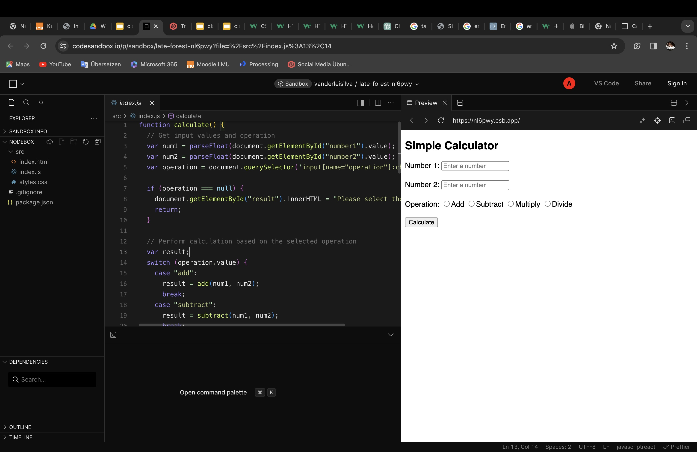

Backend Development
Exercise 1
Update the calculator use-case to support 3 operations
Teamwork
Presentation about Social Network with:
Sum up of the social media main features;
List of the main endpoints containing the main input and outputs
http methods used for each one of them
My Job: Make the PowerPoint Files
Exercise Programming Languages
Assembly:
Low-level programming language.
Represents machine code using mnemonic instructions.
Directly corresponds to a computer's architecture.
C:
General-purpose, procedural programming language.
Known for efficiency and close-to-hardware control.
Widely used for system and application development.
C++:
Extension of C, adds object-oriented features.
Combines procedural and object-oriented programming.
Used for system/application development, game development, etc.
Java:
Object-oriented, platform-independent language.
Emphasizes "write once, run anywhere" with its virtual machine (JVM).
Commonly used for web development, enterprise applications.
Python:
High-level, interpreted, and dynamically-typed language.
Emphasizes readability and ease of use.
Widely used in web development, data science, automation.
PHP:
Server-side scripting language.
Designed for web development.
Embeds within HTML and executes on the server.
Swift:
Developed by Apple for iOS, macOS, watchOS, tvOS.
Combines performance of compiled languages with readability.
Known for safety features and modern syntax.
Exercise Student Application
Demostrated here:
My-Class